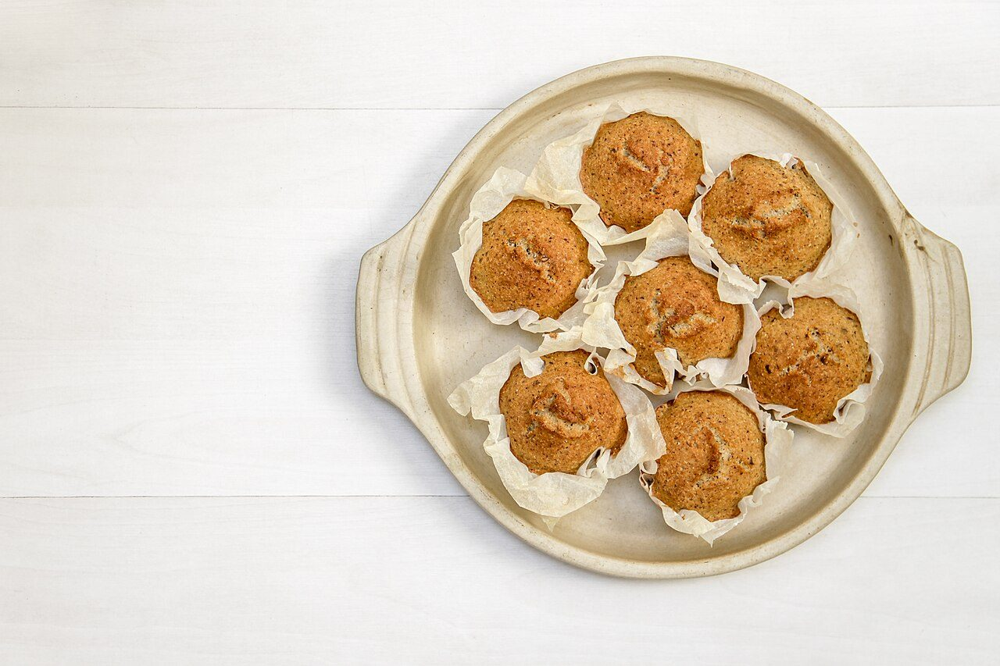

制作側の連想
平らなスキャナーを、真上から図にしてみる
このサイトは、机の上に置いた平らなスキャナーを真上から眺めたつもりで作りました。六つの部位に番号をふり、上の図と並べています。制作側の連想で、お店の理念・由来とは無関係です。実際の機器の仕様を示すものでもありません。
凡例
六つの部位
- 1原稿カバー原稿を押さえるために上から閉じる、フタの部分。
- 2原稿台ガラス原稿を伏せて置く、すき間のない平らなガラス面。
- 3スキャンヘッドガラスの下を端から端へ動く、光源とセンサーを載せた細長い部品。
- 4操作ボタン読み取りの開始や取り消しに使う、本体側面のボタン。
- 5ヒンジカバーを開け閉めするための、本体奥側の蝶番。
- 6基準マーク原稿の角をそろえる目安として、ガラスの隅に付ける目印。
ギャラリー(イメージ)
パン・コーヒー豆・焼き菓子の写真



写真はパン・コーヒー豆・焼き菓子のイメージです。お店のものではなく、お店で提供している商品を示すものでもありません。
ご案内
お店のこと(確認できたものだけ)
| 所在地 | 〒874-0934 大分県別府市駅前本町6-11 |
|---|---|
| 電話 | 準備中 |
| 営業時間 | 準備中 |
| 定休日 | 準備中 |
| ご予約 | 準備中 |
| 駐車場 | 準備中 |
| SNS | Instagram @cafeichiu_beppu |